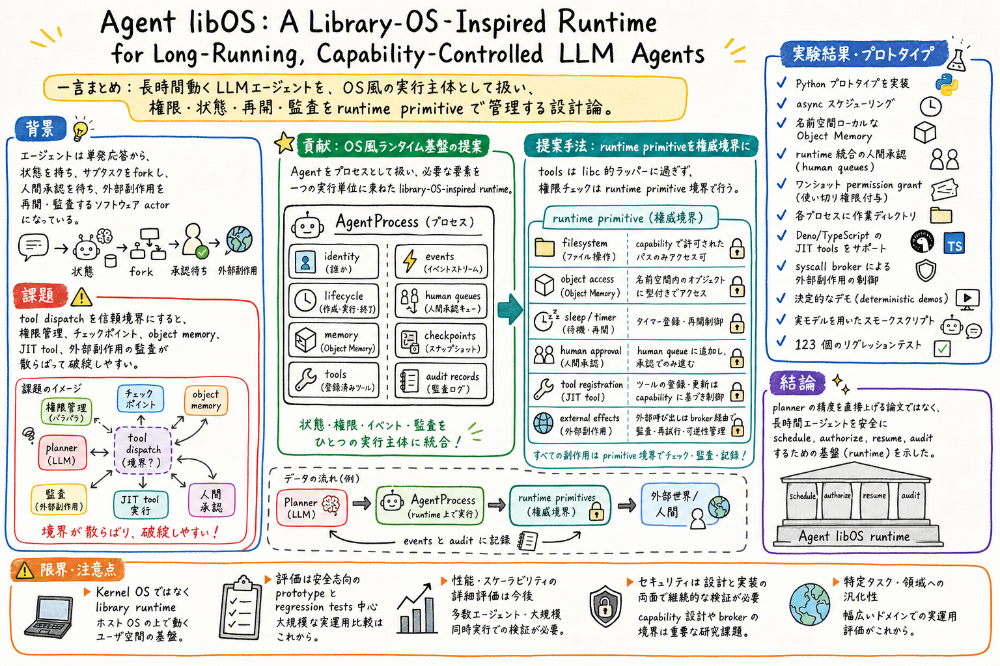

主要な貢献は、AgentProcess、AgentImage、typed Object Memory、explicit capabilities、human queues、checkpoints、events、audit records を含む runtime model の提示。

どんな論文か
この論文は、LLM エージェントを単発の request-response ではなく、長時間動く software actor として扱う。エージェントは状態を持ち、サブタスクを fork し、人間承認を待ち、外部副作用を起こし、あとから再開・監査される必要がある。
そこで著者は、agent を AgentProcess として扱う library-OS-inspired runtime substrate を提案する。AgentProcess は process identity、parent-child lineage、lifecycle state、tool table、typed Object Memory、explicit capabilities、human queues、checkpoints、events、audit records を持つ。
中心の設計原則は、tools are libc-like wrappers; runtime primitives are the authority boundary というもの。つまり、tool wrapper 側に権限境界を置くのではなく、filesystem access、object access、sleep、human approval、JIT tool registration、external side effects などを runtime primitive の境界でチェックする。
これは planner accuracy を上げる論文ではない。長時間エージェントを schedule、authorize、resume、audit するための基盤をどう置くか、という harness / runtime 設計の論文として読むと価値が高い。
Agent libOS は、LLM agent を conventional OS の中で動く library runtime 上の実行主体として扱う。kernel-mode isolation や POSIX-compatible OS を作るのではなく、agent 用の lifecycle、memory、tool、capability、audit の管理面を runtime substrate としてまとめる。
論文の焦点は、長時間動く agent が外部世界へ副作用を持つとき、どこを信頼境界にするべきかという点にある。著者は tool dispatch ではなく runtime primitive を境界にするべきだと主張する。
課題と貢献
特に、tools を libc 的な薄い wrapper とみなし、実際の authority は runtime primitives 側に置く設計が読みどころ。これにより、filesystem/object access、sleep、human approval、tool registration、external side effects を一貫した policy で制御しやすくなる。
手法のしくみ
1
Agent libOS では、agent は process identity と lifecycle state を持つ。parent-child lineage によって fork された subtasks を辿れるようにし、tool table は AgentImage から導かれる。
2
Object Memory は namespace-local で typed に扱われ、filesystem と object access は primitive 境界で capability check を受ける。human approval や one-shot permission grants も runtime に統合され、監査可能な record として残る。
3
JIT tool registration では Deno / TypeScript tool を syscall broker 経由で扱い、tool を直接信頼境界にしない。外部副作用や shell 実行も runtime primitive に寄せて扱う。
検証結果
論文は Python prototype を実装し、async scheduling、namespace-local Object Memory、runtime-integrated human approval、one-shot permission grants、per-process working directories、filesystem/object bridge tools、injectable Resource Provider Substrate を示す。
評価は safety-oriented な prototype evaluation と regression tests が中心で、執筆時点で 123 regression tests、deterministic demos、real-model smoke scripts があると報告されている。これは性能ベンチマークというより、runtime substrate と安全境界が一貫して動くかの確認に近い。
限界と読みどころ
Agent libOS は kernel OS ではなく、library runtime として設計されている。そのため hardware drivers、kernel-mode isolation、POSIX-compatible OS は目的外。
また、幅広い実運用比較や planner accuracy の改善を示す論文ではない。読む時は、agent の性能向上ではなく、長時間 agent の権限境界、再開、監査の設計語彙を得る論文として位置づけるのがよい。
読みながら見る図表や節
- 読む時は、agent を process として扱う抽象と、tool wrapper ではなく runtime primitive に権限境界を置く抽象を中心に見る。
- 既存の agent harness、Codex skills、human approval、wiki memory、article-page-publisher のような長時間 workflow を、この AgentProcess / capability / checkpoint / audit の語彙で読み替えると実務への引き出しが作りやすい。
次に読むなら
- 次に読むなら、Agent libOS の design と threat model を精読し、Codex / Claude Code / personal assistant の harness に置き換えるとどの primitive が必要かを整理するとよい。
- 関連して読むなら、Code as Agent Harness、Harness-1、How to Interpret Agent Behavior、Counterfactual Trace Auditing など、agent runtime と evaluation を扱う論文とつなげると見通しがよくなる。
読後Q&A
この論文の中心問いは？
長時間動き、副作用を持つ LLM agent を、安全に schedule、authorize、resume、audit する runtime substrate はどう設計できるか。
何が新しい？
agent を AgentProcess として扱い、tool dispatch ではなく runtime primitive を authority boundary にする設計を、Object Memory、capability、checkpoint、human approval、audit と一緒にまとめている点。
これは OS を作る論文？
kernel OS ではなく、conventional host OS 上で動く library runtime の提案。POSIX 互換 OS や hardware driver を作る話ではない。
tools are libc-like wrappers とは？
tool は便利な wrapper であり、権限判断そのものは tool 側ではなく runtime primitive 側で行う、という設計原則。
実装では何を示している？
Python prototype で async scheduling、Object Memory、human approval、one-shot permission grants、working directories、Deno / TypeScript JIT tools、syscall broker、regression tests などを示している。
どんな限界がある？
性能向上や広範な実運用比較が主眼ではない。評価は安全志向の prototype と regression tests が中心で、runtime 設計の提案として読むのがよい。
実務では何に効く？
agent skill、human approval、checkpoint / resume、audit log、外部副作用の権限管理を、個別 tool の責任ではなく runtime / harness の責任として整理できる。
関連して読むなら？
Code as Agent Harness、Harness-1、How to Interpret Agent Behavior、Counterfactual Trace Auditing など、agent harness と評価を扱う論文と相性がよい。